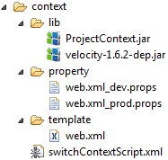

An ANT task to handle different contexts for a project. A context is a list of name-value pairs. For instance the db-username and the db-password.
Task description: description
You have a web application, which defines its database name in the web.xml as a parameter:
<context-param>
<param-name>db-name</param-name>
<param-value>productsDb</param-value>
</context-param>
For development you have another db: testDb and you set it in web.xml while you are developing your app. You have a step in your deployment process, which is easy to forget. ProjectContext gives you an ANT tasks, which helps to solve this issue.
Create a folder structure:
Content of files:
web.xml_dev.props db-name=testDb web.xml_prod.props db-name=productsDb web.xml
...
<context-param>
<param-name>db-name</param-name>
<param-value>${db-name}</param-value>
</context-param>
...
switchContextScript.xml
<project name="projectcontext" default="switchcontext" basedir=".">
<taskdef name="switchcontext" classname="com.inepex.projectcontext.SwitchContextTask">
<classpath>
<fileset dir="lib">
<include name="*.jar" />
</fileset>
</classpath>
</taskdef>
<target name="switchcontext">
<input message="Please enter requested context name:" addproperty="contextName" />
<switchcontext contextPath="." resourceName="web.xml" contextName="${contextName}" outPath="../out" />
</target>
</project>
After executing this script it will create (or overwrite) a web.xml file in the directory, given as outPath.